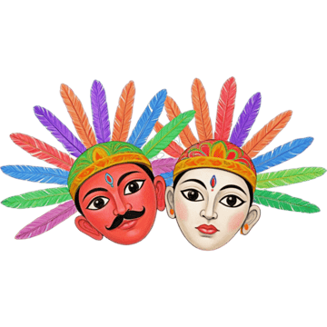

Selamat Datang di Artikel Mini
Budaya Betawi

Apa itu Budaya Betawi?
Budaya Betawi merupakan budaya asli masyarakat Betawi yang tinggal di wilayah Jakarta dan sekitarnya. Budaya ini terbentuk dari perpaduan berbagai etnis seperti Melayu, Arab, Tionghoa, India, Portugis, dan Belanda. Perpaduan ini menciptakan budaya yang unik dan kaya akan tradisi.
Kesenian Tradisional
Kesenian Betawi sangat beragam. Salah satunya adalah Ondel-Ondel, boneka raksasa yang menjadi ikon budaya Betawi. Selain itu, ada juga Lenong (teater tradisional), Gambang Kromong (musik perpaduan Tionghoa dan Betawi), serta Tari Topeng yang biasa ditampilkan dalam acara adat.
Kuliner Khas Betawi
Betawi juga dikenal dengan kulinernya yang khas, seperti:
- Kerak Telor – makanan tradisional yang dimasak di atas arang.
- Soto Betawi – soto dengan kuah santan atau susu yang gurih.
- Es Selendang Mayang – minuman segar khas Betawi.
Pakaian Adat
Pakaian adat Betawi terdiri dari baju kurung untuk wanita dan sadariah lengkap dengan peci untuk pria. Dalam pernikahan, pengantin Betawi mengenakan busana yang terinspirasi dari budaya Tionghoa dan Arab, seperti baju kebaya encim dan jubah.
Upacara Adat
Masyarakat Betawi juga memiliki beragam upacara adat, seperti:
- Upacara Palang Pintu – tradisi penyambutan pengantin pria oleh keluarga wanita.
- Maulid Nabi – peringatan kelahiran Nabi Muhammad SAW yang dilaksanakan meriah dengan budaya lokal.